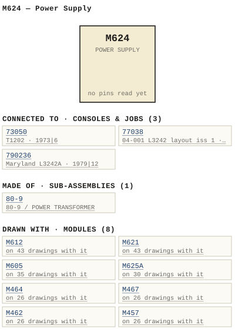

M624 — Power Supply
| Type | module |
| Category | POWER |
| Try it | simulator & front panel · download package (zip) |
| Earliest dated evidence | 1968|1 — title-block date |
| Evidence | "DATE JULY 68" in WBS Photos-1-001/WBSps.ca - 20210317 11X 17 Scans (9).png |
| Confidence | high |
| All years found | 1968|1, 1979|12 |
| Used in jobs | 73050 (1973|6), 77038 (1977|10), 790236 (1979|12) |
| Folder | DOCUMENTS/APK/wbs 001 |
| Folder | DOCUMENTS/Communication/7000 series - Intercom System |
| Folder | DOCUMENTS/Done/Done - L2042 Console |
Connections
What it is made of and what it is part of.
Pictures


M624.connections.svg 1968 - DOC - FRAME WIRING VIEWED FROM REAR.png
1968 - DOC - FRAME WIRING VIEWED FROM REAR.png 1968 - 624-02-001 - POWER SUPPLY M624 SCHEMATIC - DRN C.S.O'CONNELL - ISS 1.png
1968 - 624-02-001 - POWER SUPPLY M624 SCHEMATIC - DRN C.S.O'CONNELL - ISS 1.png 1977 - PRICE LIST - 7000 series - price list.jpg
1977 - PRICE LIST - 7000 series - price list.jpg 1977 - PRICE LIST - list.jpg
1977 - PRICE LIST - list.jpg 1979 - M624 - P03 - TOC.jpg
1979 - M624 - P03 - TOC.jpg M624 - P03 - TOC.jpg
M624 - P03 - TOC.jpg 19xx - M605 - AD - wbsps - ad - 600 series.jpg
19xx - M605 - AD - wbsps - ad - 600 series.jpg 1968 - M624 - OPERATION CONNECT PI.jpg
1968 - M624 - OPERATION CONNECT PI.jpg 1968 - M624 - P01 - Cover.jpg
1968 - M624 - P01 - Cover.jpg 1968 - M624 - P02.jpg
1968 - M624 - P02.jpg 1968 - M624 - P04- Warranty.jpg
1968 - M624 - P04- Warranty.jpg 1968 - M624 - P05 - 1-1.jpg
1968 - M624 - P05 - 1-1.jpg 1968 - M624 - P06 - 2-1.jpg
1968 - M624 - P06 - 2-1.jpg 1968 - M624 - P07 - 3-1.jpg
1968 - M624 - P07 - 3-1.jpg 1968 - M624 - P08 - 4-1.jpg
1968 - M624 - P08 - 4-1.jpg 1968 - M624 - WBS test procedures 0.jpeg
1968 - M624 - WBS test procedures 0.jpeg 1968 - M624 - WBS test procedures 1.jpeg
1968 - M624 - WBS test procedures 1.jpeg 1979 - 624-02-001 - 24V POWER SUPPLY SCHEMATIC - DRN GEB - ENG GEB - ISS 2.jpg
1979 - 624-02-001 - 24V POWER SUPPLY SCHEMATIC - DRN GEB - ENG GEB - ISS 2.jpg 19xx - DOC - DSC03076 copy.jpg
19xx - DOC - DSC03076 copy.jpg 19xx - DOC - L2042 - P05.jpg
19xx - DOC - L2042 - P05.jpg 19xx - DOC - L2042 - P11.jpg
19xx - DOC - L2042 - P11.jpg 19xx - DOC - L3242 - P05.jpg
19xx - DOC - L3242 - P05.jpg 19xx - DOC - L3242 - P11.jpg
19xx - DOC - L3242 - P11.jpg 19xx - DOC - wbsps - ad - 600 series.jpg
19xx - DOC - wbsps - ad - 600 series.jpg 1973 - 73050-02-004 - AUDIO CONSOLE MONITOR SCHEMATIC - DRN PC - ISS 1.jpeg
1973 - 73050-02-004 - AUDIO CONSOLE MONITOR SCHEMATIC - DRN PC - ISS 1.jpeg 1977 - 77038 - c (2).jpg
1977 - 77038 - c (2).jpg 1979 - 790236 - 790236-04-001 (5).jpg
1979 - 790236 - 790236-04-001 (5).jpg 1986 - M524A - IMG_3146.jpg
1986 - M524A - IMG_3146.jpgPrice history
| Year | Kind | Price | Listed as | Effective | Source |
|---|---|---|---|---|---|
| 2005|38 | used market value | 100.00 | M624 Power Supply | wbsps - website ARCHIVE/WBSPS 2008/ARCHIVE/old website/PriceGuide.htm | |
| 2006|39 | used market value | 100.00 | M624 Power Supply | wbsps - website ARCHIVE/WBSPS 2008/ARCHIVE/jan 2006 shell/priceguide.htm |
Pinout & connections
Dates found in the documents


Physical manual inventory
| Item | Location | Status | Scanned |
|---|---|---|---|
| M624 Power Supply | DUPLICATE | PDF - Already scanned | |
| M624 - Power Supply | PDF - Already scanned |
Ads & brochures
- 19xx - M605 - AD - wbsps - ad - 600 series.jpg
- 19xx - M610 - AD - wbsps - ad - 600 series.jpg
- 19xx - M612 - AD - wbsps - ad - 600 series.jpg
- 19xx - M621 - AD - wbsps - ad - 600 series.jpg
- 19xx - M666 - AD - wbsps - ad - 600 series.jpg
- 19xx - M624 - AD - wbsps - ad - 600 series.jpg
- 19xx - M648 - AD - wbsps - ad - 600 series.jpg


Documents (4)
| Year | File | |
|---|---|---|
| 1968|1 | 1968 - M624 - Power Supply (2).pdf | note |
| 1968|1 | 1968 - M624 - Power Supply.pdf | note |
| 1979|12 | 1979 - M624 - Power Supply (2).pdf | note |
| 1979|12 | 1979 - M624 - Power Supply.pdf | note |
Photos & scans (74)


Sub-assemblies & parts used (1)
| Item | What | Family | Year | How we know |
|---|---|---|---|---|
| 80-9 | 80-9 / POWER TRANSFORMER | Power transformers (80-n) | 1979|12 | named in its manual |
Consoles & jobs it is connected to (3)
Their own drawings name this module.
| Job | Year | Drawing | Page |
|---|---|---|---|
| 73050 | 1973|6 | 1973 - 73050-02-004 - AUDIO CONSOLE MONITOR SCHEMATIC - DRN PC - ISS 1.jpeg | 1 |
| 77038 | 1977|10 | 1977 - 77038 - c (2).jpg | 1 |
| 790236 | 1979|12 | 1979 - 790236 - 790236-04-001 (5).jpg | 1 |
Named in other drawings & documents (4)
| File | Page |
|---|---|
| 1986 - M524A - IMG_3146.jpg | 1 |
| 1995 - M405P - ITEMIMP(1).TXT (2).docx | 1 |
| 1995 - M405P - ITEMIMP(1).TXT.docx | 1 |
| 1995 - M405P - ITEMIMP.TXT.docx | 1 |
From the manuals
Each manual split into its sections. Text that is the same in many Ward-Beck manuals (warranty, address, standard notes) is kept once on the Boilerplate page and linked.
General description (5)
Description — 525 words · 1979 - M624 - Power Supply (2).pdf, page 6
M624 POWER SUPPLY The M62h power supply is designed primarily for use with the Ward-Beck 600 scrics equipment but may be used for any application requiring 24 volts dc, such a5 the operation of relays and lamps, eIc. Two independently fused 24V , 1.5A dc outputs are provided selection of primary transformer winding taps permiit 10% adjust- ment of the nominal dc output voltage. conservatively rated silicon diode bridge assembly and computer grade filter capacitor ensure optimum performance characteristics and lony lerm dependabi ity The primary ac and secondary dc fuses are conveniently located on the module front panel power ON/OFF switch and associated indicator Vamp are also mounted on the front pancl AI connections are Made via the MF6 frame receptacles. The MF6 connectors are wired for the required ac and dc operating conditions of the M624 modulc. Modules may therefore be interchanged without affecting the operation of the system. The modest size of 3.4 13.7 inches allows five M624 power supplies to be accommodated in onc standard rack mounting (19W 3.Sh) MF6 cquipment frame Perforations in the mounting frame and rodule assure adequate vertical ventilation by natural convection 2-1
WARD-BECK SYSTEMS LTD INSIALLAIION M624 POWERSUPPLY The M624 plugs directly into the MF6 mounting frame which may bc in- stalled in standard EIA 19 inch equipment rack with the hardware supplied with the rack. The MF6 frame is furnished with full guide complement in order t0 accept maximum of five M624 power supplies or any combination of single Or multiple width miodules no[ exceeding 10 single width modules. If the mounting frame has been procured Icss reccptacles, these may first be installed in the appropriale module positions. Note that the receptacle containing the ac Iine voltage connections is inverted t0 provide thc mechanical polarizing necessary 40 prevent inadvertent insertion of other companion modules which do not operate Trom the ac Iine Jumper terminals P2 , 12 (chassis ground) of all power supplies on common framc together and connect #18 AWG wire from each frame of power supplies to the systems ground bus . If the M624 supply is used in WBS console system the following polarity and ground procedures apply: +24V : Fused side of all relay and Iamp circuits. 24V comimon: Normally connecled t0 ground_ When used in console systems, it is normal practice Lo connect the +24V t0 the common side of all lamps, relays, etc , The control sidc of component is then switched t0 ground via an appropriate control switch or contact . Because the M62h is intended for general purpose Jamp illumination relay operation or other non-critical applications, the aclual oulput voltage may vary in accordance with the Iine input, and the output Ioad Thus the 24V specified is nominal dc output. In general , the 24V dc wili be within 207 for ali conditions, but when applications arise utilizing relays that do not Pull In below 18V the M624 should nol be used Use fuses with the corrcct ratings for primary and secondary functions. Failure to corply in this regard may cause permanent damage to the power supply 3-1
WAAD-BECK Systems LTD PARTS LiST M624 POWER SUPPLY PARI
- source: 1979 - M624 - Power Supply (2).pdf, p. 6
Description — 180 words · 1968 - M624 - P06 - 2-1.jpg, page 1
M624_POWER_SUPPLY The M624 power supply designed primarily for use with the Ward- Beck 600 seriecs cquipment but may be used for any application requiring volts dc, such a5 the operation relays and lamps; eIc . Two independently fuscd 24V , -5A dc outputs are provided. selection primary transformer winding taps permit 10% adjust- ment the nominal output voltage conservatively rated silicon diode bridge assembly and computer gradc filter capacitur ensure optimum rforma nce characteristics and long term dependability The primary and secondary dc fuses are conveniently located the module front panel _ power ON/OFF switch and associated indicator Vamp 4re also mounted on the front pancl .
Al connections are Made via the MF6 frame receptacles. The MF6 cannectors are wired for the required ac and dc operating conditions the M624 modulc. Modules may therefore be interchanged without affecting the operalion the system. Thc modest size 3.4 3.4 13.7 inches allows five M624 power supplies be accommodated one standard rack mounting 19w 3.SH) MF6 cquipment frame Periorations the mounting frame and rodule assurc adequate vertical ventilation by natural canvection.
2-1
- source: 1968 - M624 - P06 - 2-1.jpg, p. 1
Description — 0 words · 1977 - M624 - PRICE LIST - 7000 series - price list.jpg, page 1
(only shared text)
Also: general boilerplate (9 devices) · general boilerplate (9 devices) · general boilerplate (9 devices)
- source: 1977 - M624 - PRICE LIST - 7000 series - price list.jpg, p. 1
- also in: 1979 - M624 - Power Supply.pdf, p. 6 · 1977 - M624 - PRICE LIST - price list.jpg, p. 1
Maintenance & alignment (1)
Test Procedure — 169 words · 1968 - M624 - WBS test procedures 1.jpeg, page 1
M624 POWER SUPPLY Reference M624 Manual wiring using an ohmmeter Refer to WBS Check the module schematic B 624-02-001 Special attention should be given to the following: a) that the "hot" Iine of the Ac Iine voltage is Check connected between P1-7 and the end terminal of F1 (not the front ring) b ) Check that C1 is wired for the correct polarity _ c) Ensure that all fuses are the correct types (fast blow or slow blow) and sizes.
2 AC slowly through variac to 115V Ac and confirm Apply power the DC output voltages at V1 and V2 to be +24 nominally 3 _ a) Connect 16 ohm load with power handil ing capability of greater than 100w to one of the outputs b ) Measure the DC output voltage confirm it to be +24 nominally (across the load) and c) Measure the output ripple voltage which should be less than V rms.
d) Measure the load current which should be about 1.5 A. Page ISSUE APRIL/83
- source: 1968 - M624 - WBS test procedures 1.jpeg, p. 1
Drawings (9)
Each scan with its trace laid over it: the slider runs from the scan to the vector drawing. Click one to see it large and save it as SVG, DXF, KiCad, PDF or PowerPoint.
POWER SUPPLY M624 / SCHEMATICviewer
24V POWER SUPPLY / SCHEMATICviewer
Frame Wiring Viewed From Rearviewer
Operation Connect Pi-viewer
Read from the drawing title blocks.
| Drawing | Title | Date | Drawn by | Checked by | Iss. | Source |
|---|---|---|---|---|---|---|
| — | Frame Wiring Viewed From Rear | 1968|1 | file | |||
| B 624-02-001 | POWER SUPPLY M624 / SCHEMATIC | 1968|1 | 1 | file | ||
| LB 624-02-001 | 24V POWER SUPPLY / SCHEMATIC | 1979|12 | GEB (Gerry E. Bell) | PC | 2 | file |
| — | Ect Pi- At-J | GEB (Gerry E. Bell) | file p.9 | |||
| — | Ect Pi- At-J | GEB (Gerry E. Bell) | file p.9 | |||
| — | Operation Connect Pi- | GEB (Gerry E. Bell) | file | |||
| — | file | |||||
| 624-02-001 | Operation Conniect Pi- | GEB (Gerry E. Bell) | file p.9 | |||
| 624-02-001 | Power Supply Schematic Eng | F | file p.9 |